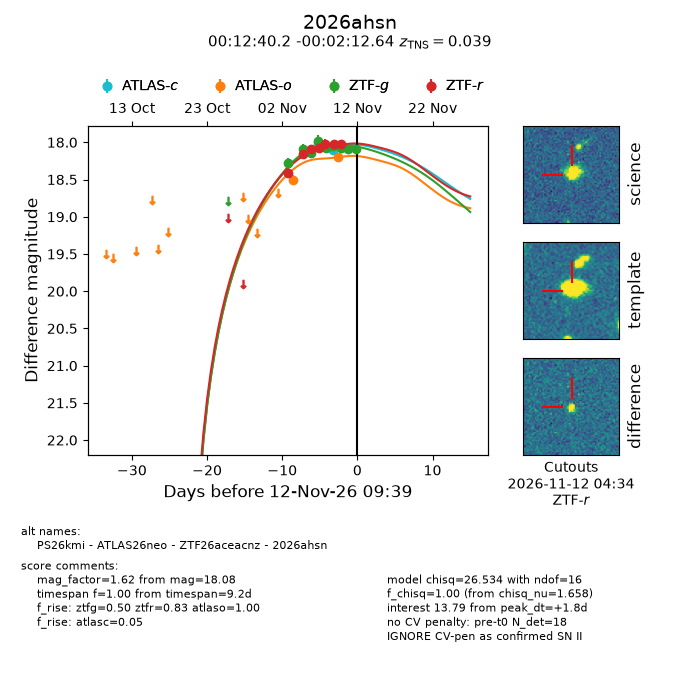
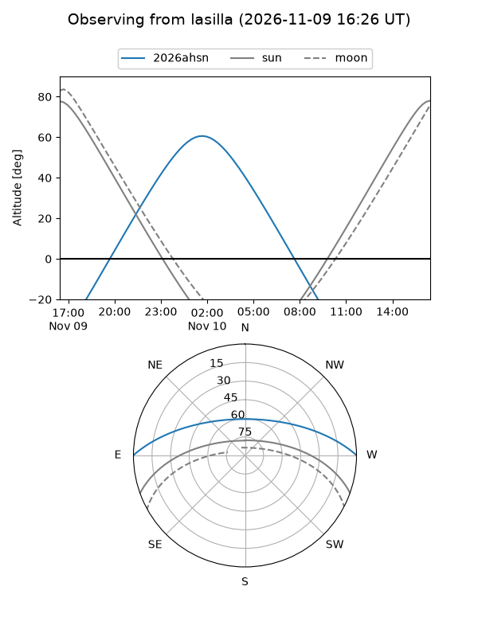
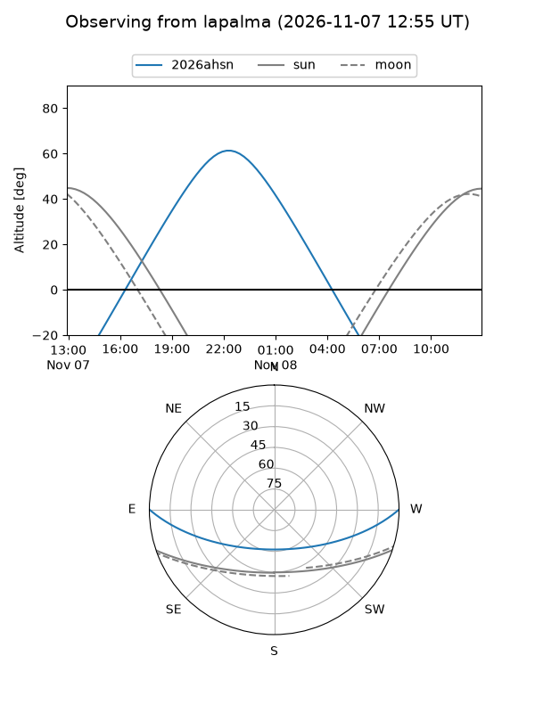
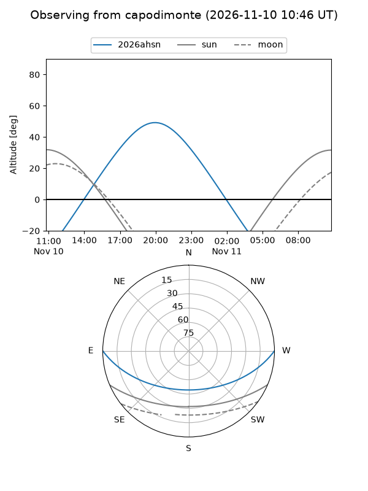
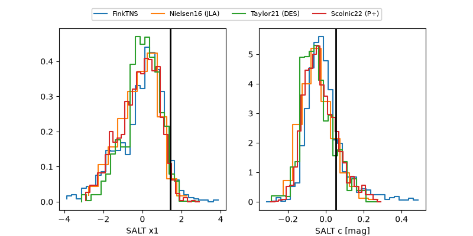

2026ahsn
Target 2026ahsn at 2026-11-12 09:45
Aliases and brokers:
FINK-ZTF: ztf.fink-portal.org/ZTF26aceacnz
Lasair-ZTF: lasair-ztf.lsst.ac.uk/objects/ZTF26aceacnz
ALeRCE-ZTF: alerce.online/object/ZTF26aceacnz
YSE-PZ: ziggy.ucolick.org/yse/transient_detail/2026ahsn
TNS name: wis-tns.org/object/2026ahsn
Direct TNS query: direct search
alt names
ZTF26aceacnz (ztf,fink_ztf)
2026ahsn (tns,yse)
PS26kmi (panstarrs)
ATLAS26neo (atlas)
Coordinates:
equatorial (ra, dec) = 3.1673,-0.03685
equatorial (HMS+DMS) = 00:12:40.16,-00:02:12.64
galactic (l, b) = (102.3741,-61.35156)
Flags:
TNS type: SN II
TNS redshift: 0.0390
peak dt: +1.8
Photometry:
last atlasc=18.10, atlaso=18.20, ztfg=18.08, ztfr=18.02
2 atlasc, 2 atlaso, 9 ztfg, 7 ztfr detections
Lightcurve

Visibility



Additional plots
